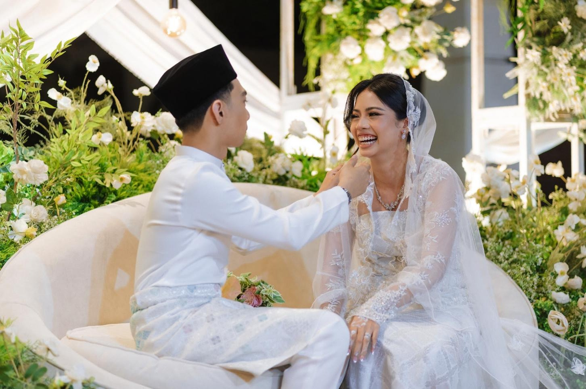
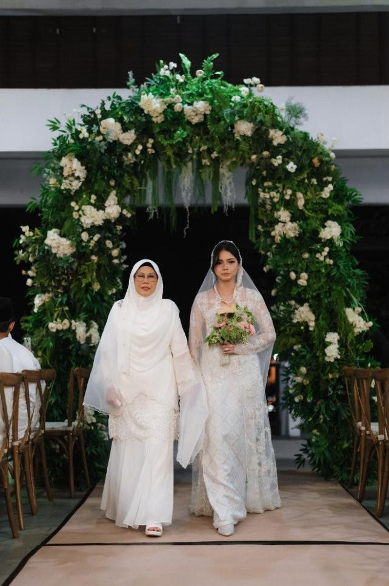
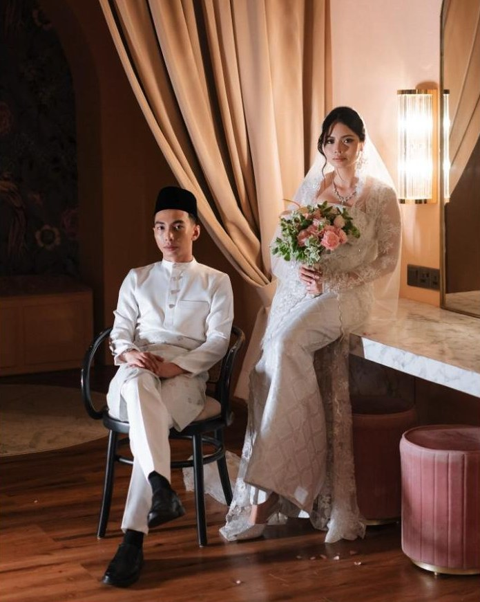
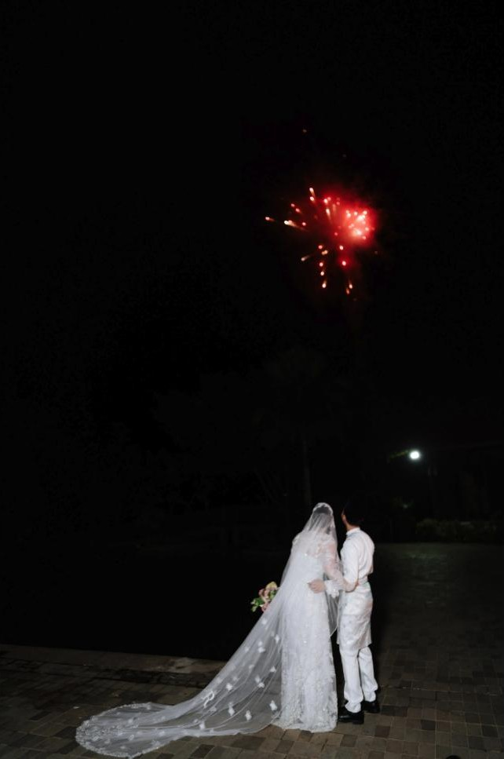

The Nikah
Aiman & Dee
Alhamdulillah — the best day of my life.

I · THE PELAMIN
Under the lights, just us.
White flowers, hanging bulbs and a sofa we didn’t want to leave.


“Locked. Here’s to love, barakah and forever together, inshaAllah.”


II · THE AKAD
Nervous? Only a little.
One breath, one sentence, and a whole new life.
III · THE WALK
Down the aisle, one at a time.
First me, trying to look calm. Then Dee, and I stopped trying.



IV · FAMILY
The ones who raised us.

V · EVERYONE WHO CAME
Our people, all in one room.


VI · AFTER DARK
Fireworks, then quiet.
The night ended with a bang, and a minute to ourselves by the water.
